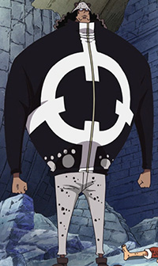

What is this Website about?
This is a website solely about the Anime and Manga called One Piece and it's mainly about my said thoughts and ideas about the show, this website is a One Piece focused website so this website is for those who are fans of One Piece or have an interest in it.
Bartholomew Kuma

I want to talk about his significance first
Why Kuma?
choose Kuma becuase of the huge imopact he has on the story of One Piece and a lot of things and events in One Piece either happen because of Kuma or Kuma is involved and the first of those impacts ill talk about is about his involvement with the strawhats.
My simple of reasons of many
Without Kuma the strawhats would have died or been captured at Sabaody Kuma also sent the strawhats to islands that helped them greatly power up and train during the 2 year timeskip Kuma used his last remaining humanity to give himself one last command before he fully turned into a mindless cyborg to defend the thousand sunny while the strawhats were away